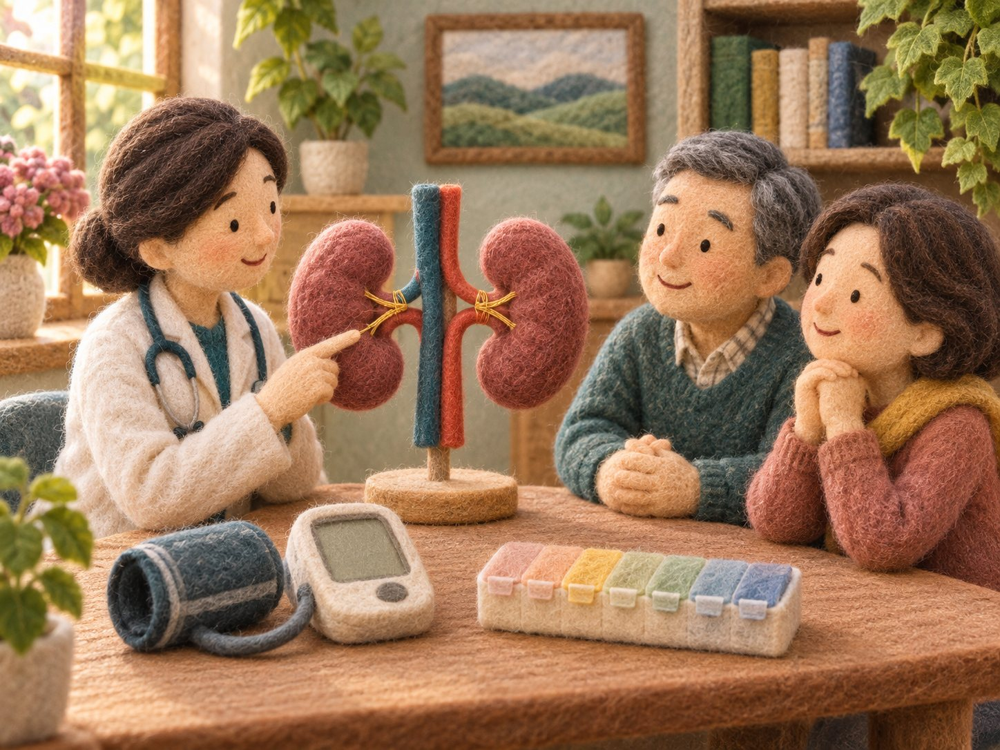

頑固型高血壓怎麼辦？腎動脈交感神經電燒是什麼

本文最早寫於 2021 年。2022 年台灣高血壓指引與 2024 年歐洲心臟學會指引已納入這項治療並有明確的適用條件，以最新版為準。
本篇重點
頑固型高血壓要先把藥物、鹽分與體重控制到位，並排除睡眠呼吸中止等次發性原因；腎動脈交感神經電燒是用導管降低腎動脈周圍交感神經活性的治療，是給藥物控制不理想的病人的選項。這項治療不是開刀，做完多數人仍然需要追蹤血壓、回診調整藥物。能不能做，要先和心臟內科醫師討論。
腎動脈交感神經電燒（英文叫 renal denervation），是用導管降低腎動脈周圍交感神經活性的治療。它是給藥物控制不理想的病人的選項，最典型的就是「頑固型高血壓」：已經吃了多種降壓藥，血壓還是降不下來的人。它不是一般高血壓一開始就會用的方法。
什麼是頑固型高血壓
2022 年台灣高血壓指引把頑固型高血壓定義為：已經用了三類降壓藥的最適劑量，血壓仍然達 130/80 mmHg 以上，或是需要四類以上的降壓藥才能把血壓控制好。2024 年歐洲心臟學會的指引，是指已經用了足量的三種藥（包含利尿劑、腎素血管收縮素系統阻斷劑、鈣離子阻斷劑），診間血壓仍然高於目標，並且經過居家或 24 小時血壓確認的情形。確定是頑固型之前，醫師會先確認有沒有按時服藥、量血壓的方法對不對，並找看看有沒有睡眠呼吸中止、其他次發性高血壓等可以處理的原因。
這個治療是怎麼做的
醫師從血管放入導管到腎動脈，用能量降低腎動脈周圍交感神經的活性，讓血壓有機會下降。它不是開刀，也沒有放進體內的永久裝置。
效果有多少
我在 2021 年的貼文引用當時的研究，提到血壓可以下降近 10 mmHg。後來更完整的假手術對照試驗，數字比較保守：2022 年台灣指引整理的 SPYRAL HTN-OFF MED 試驗（沒有吃降壓藥的病人），24 小時收縮壓比假手術組多降約 3.9 mmHg，診間收縮壓多降約 6.5 mmHg；RADIANCE-HTN TRIO 試驗（已經吃三合一降壓藥、血壓仍控制不好的病人），日間收縮壓比假手術組多降約 4.5 mmHg。降幅因人而異，不是每個人都有效，目前也還沒有可靠的方法，事先預測誰的反應會比較好。2022 年的台灣指引把它列為「可以考慮」（IIa 級建議），對象是心血管風險較高的病人；2024 年歐洲心臟學會的指引，則是在病人了解利弊並同意的前提下，把它列為可以考慮的選項。
做之前，先把基本功做好
頑固型高血壓常常是「該做的還沒做到位」：藥物的種類與劑量要調整到位，鹽分與體重要控制，睡眠呼吸中止等次發性的原因要排除。國健署對高血壓的基本建議，是低油、低糖、低鹽、高纖的飲食，不吸菸、不喝酒，每天至少運動 30 分鐘。這些基本功沒有做好，再好的導管治療也很難發揮效果。
為什麼血壓一定要降下來
血壓長期降不下來，對心臟會造成心臟肥大、心臟衰竭，對腎臟會造成腎臟病變，對腦血管則提高中風的風險。所以頑固型高血壓的病人，不要因為「藥已經吃很多了」就放棄，請和心臟內科醫師討論，還有哪些路可以走。
哪些情況要留意
- 歐洲指引建議，這項治療要在有經驗的中心進行，並由包括高血壓專家與介入治療醫師的團隊共同評估。
- 腎功能很差（估算腎絲球過濾率低於 40）的人，目前證據不足，指引不建議。
- 做完不代表可以完全不吃藥。多數人仍然需要追蹤血壓、回診調整藥物，也要持續生活型態的控制。
- 能不能做、費用與保險給付的規定，依醫院與當時的公告而定，請先和您的心臟內科醫師討論。
本文為一般衛教，不能取代門診評估。
一張表看懂
頑固型高血壓與腎動脈交感神經電燒的重點整理如下。
| 項目 | 說明 |
|---|---|
| 頑固型的定義 | 2022 年台灣高血壓指引把頑固型高血壓定義為已經用了三類降壓藥的最適劑量，血壓仍然達 130/80 mmHg 以上，或是需要四類以上的降壓藥才能把血壓控制好。 |
| 先做的基本功 | 藥物的種類與劑量要調整到位，鹽分與體重要控制，睡眠呼吸中止等次發性的原因要排除。 |
| 電燒怎麼做 | 醫師從血管放入導管到腎動脈，用能量降低腎動脈周圍交感神經的活性，讓血壓有機會下降。 |
| 不建議的情況 | 腎功能很差（估算腎絲球過濾率低於 40）的人目前證據不足，所以指引不建議做這項治療。 |
| 做完之後 | 做完不代表可以完全不吃藥，多數人仍然需要追蹤血壓、回診調整藥物，也要持續生活型態的控制。 |
常見問題
腎動脈交感神經電燒適合哪些人？
腎動脈交感神經電燒是給藥物控制不理想的人的選項，典型對象是頑固型高血壓，也就是已經用足三類降壓藥，血壓仍然達 130/80 mmHg 以上，或需要四類以上降壓藥才能控制血壓的人。2022 年台灣高血壓指引把它列為心血管風險較高的病人可以考慮的選項。一般高血壓一開始不會用腎動脈交感神經電燒，能不能做要先和心臟內科醫師討論。
腎動脈交感神經電燒需要開刀嗎？
腎動脈交感神經電燒不是開刀，也沒有放進體內的永久裝置。醫師從血管放入導管到腎動脈，用能量降低腎動脈周圍交感神經的活性，讓血壓有機會下降。
做完腎動脈交感神經電燒就可以停藥嗎？
做完腎動脈交感神經電燒，不代表可以完全不吃藥。多數人仍然需要追蹤血壓、回診調整藥物，也要持續生活型態的控制。
參考資料
- 2022 Guidelines of the Taiwan Society of Cardiology and the Taiwan Hypertension Society for the Management of Hypertension（Acta Cardiol Sin 2022，第 19 章頑固型高血壓）
- 2024 ESC Guidelines for the management of elevated blood pressure and hypertension（Eur Heart J 2024）
每個人的狀況不同，文章不能取代門診評估。想知道自己適不適合，歡迎帶著過去的檢查報告來門診討論。